Look carefully.
The smiling panda carries a magnifier in its right paw across the job cards, its bamboo standing beside it.
A thoughtful search partner
JobDeputy searches, sorts, and brings back the promising work, then waits for you to decide what happens next.

The smiling panda carries a magnifier in its right paw across the job cards, its bamboo standing beside it.
Weak options leave the frame; one promising role receives the green check.
The magnifier is put away and the selected role lands in the deputy’s right paw as loading reaches one hundred percent.